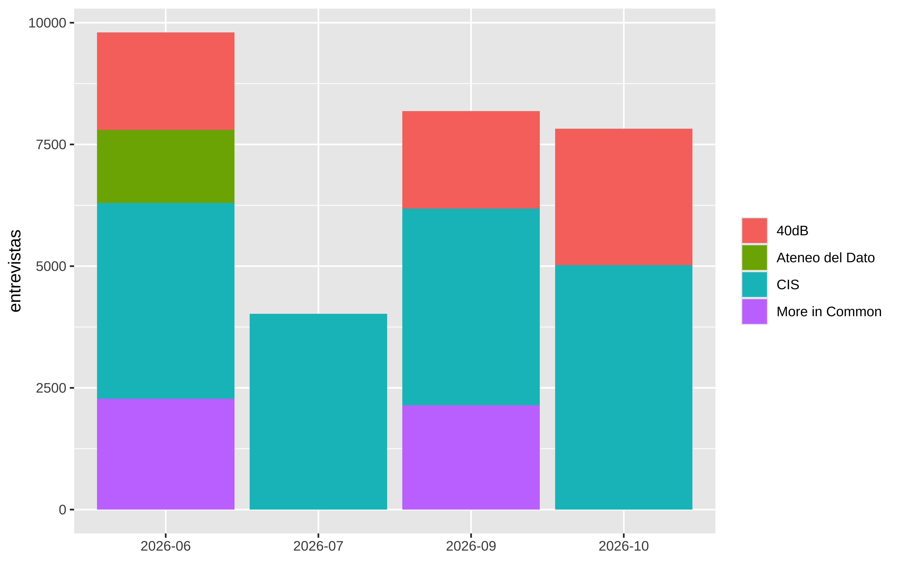

Mostrar código
suppressPackageStartupMessages({
library(dplyr)
library(tidyr)
library(DT)
})
enc <- readRDS(here::here("2026/11/mrp-multiencuesta/datos/encuestas.rds"))José Luis Cañadas Reche
October 28, 2026
October 28, 2026
En el post de octubre hice un MRP con una sola encuesta, el barómetro del CIS de septiembre , postestratificando por comunidad autónoma.
Pero pensando en que si al final lo que uso para postestratificar son solo datos demográficos, más el recuerdo de voto y para modelar lo mismo, pues podría unir varios encuestas, por ejemplo, varios barómetros del CIS o microdatos de otras empresas.
Esta es la primera parte de la serie. El plan:
brms y mm(), y de las celdas a los escaños.Nada de error histórico ni de volatilidad: eso ya lo hice en el post del 29-N completo. Aquí el voto es latente, lo miden las encuestas del mes, y el modelo bayesiano sirve para estimarlo bien en celdas pequeñas.
Nueve encuestas, 29.831 entrevistas. La tabla de abajo la genera 01_armoniza.R; aquí leo su salida y resumo qué aporta cada casa:
resumen <- enc |>
group_by(casa, estudio, mes) |>
summarise(
n = n(),
provincia = mean(!is.na(prov)),
prob_voto = mean(!is.na(prob_voto)),
vota_seguro = mean(!is.na(vota_seguro)),
edu_ambigua = mean(edu_ambigua %in% TRUE),
menciones_AA = sum(voto == "AA", na.rm = TRUE),
.groups = "drop"
) |>
mutate(across(
c(provincia, prob_voto, vota_seguro, edu_ambigua),
~ round(100 * .x)
))
DT::datatable(
resumen,
rownames = FALSE,
colnames = c(
"casa",
"estudio",
"mes",
"n",
"% provincia",
"% prob. voto",
"% vota seguro",
"% edu. ambigua",
"AA"
),
options = list(
pageLength = 12,
language = list(
url = "//cdn.datatables.net/plug-ins/1.10.11/i18n/Spanish.json"
)
)
)Tres cosas que condicionan todo lo que viene:
mm() en brms, pero al final se puede usar de forma coherente la verosimilitud en los modelos con Stan o numpyro.edu_ambigua = TRUE. No las reparto entre media y alta, así que en esas casas la categoría media queda sobrerrepresentada y la alta subrepresentada, en la medida en que parte de ellas sea FP de grado superior. El CIS no las necesita.
AA solo la pregunta el CIS en intención de voto (y de pasada, en el flash de 40dB): 96 menciones en total. En la serie de octubre, con las autonómicas de mayo en el recuerdo, AA salía al 9,6 %; en la intención de voto de estas generales el CIS la ve mucho más baja. Cómo tratarla (¿missing en las casas que no preguntan? ¿la serie autonómica como prior?) , no tengo claro como tratarlo, aún tengo que pensarlo. Aquí la armonización la deja como categoría aparte, con lo puesto.
00_partidos.R define las piezas comunes y 01_armoniza.R recodifica las nueve encuestas a un formato común: una fila por entrevista y 17 columnas (casa, estudio, mes, sexo, edad, edu, ccaa, prov, voto, rec, prob_voto, vota_seguro, …).
source(here::here("2026/11/mrp-multiencuesta/00_partidos.R"))
cat("partidos del voto:", paste(partidos_lv, collapse = ", "), "\n\n")
#> partidos del voto: PP, PSOE, VOX, SUMAR, PODEMOS, ERC, JUNTS, AC, BILDU, PNV, BNG, CCA, AA, UPN, OTROS
cat("recuerdo:", paste(rec_lv, collapse = ", "), "\n")
#> recuerdo: PP, PSOE, VOX, SUMAR, ERC, JUNTS, BILDU, PNV, BNG, CCA, UPN, OTROS, ABST, NO_PODIADel voto salen 15 etiquetas: los 11 partidos estatales y regionales con peso, Alianza Catalana, Adelante Andalucía (la excepción de arriba) y UPN. Alianza Catalana no se presentó el 23-J, así que no aparece en el recuerdo. Solo la pregunta el CIS en la intención de voto, y solo en Cataluña (37 entrevistas). Fuera de Cataluña ya va a OTROS, y en el modelo va con OTROS en todas partes, como en octubre. Podemos va aparte en la intención de voto: en octubre iba con SUMAR, y el mapa del 29-N la trata como partido propio en la mayoría de provincias. En el recuerdo del 23-J iba dentro de la coalición, así que se pliega a SUMAR y no tiene categoría propia. Adelante Andalucía también es nueva respecto a octubre, pero solo en la intención de voto: muy pocas casas la preguntan, así que no se puede juntar con OTROS (en las demás faltaría el dato, no sería “otros”). No se presentó el 23-J, así que no está en el recuerdo. UPN es la novedad del recuerdo de las generales respecto al post de octubre: en la tabla de postestratificación tiene cero estructural fuera de Navarra, igual que ERC y JUNTS fuera de Cataluña, PNV fuera del País Vasco o BNG fuera de Galicia.
El recuerdo del 23-J tiene 14 niveles: los partidos, la abstención y NO_PODIA, los que en 2023 tenían 15-17 años y esta vez votan (o no).
Con provincia: 25.379 de 29.831 entrevistas (el 85 %). Sin provincia quedan sobre todo More in Common y Ateneo del Dato fuera de las uniprovinciales.
La tabla de postestratificación nadie la publica, así que se fabrica. Es lo mismo que hice en octubre pero por provincia: 02_poblacion_raking.R hace tres cosas.
Los targets. Dos tablas marginales que tienen que cuadrar:
El universo es el electorado de hoy: el censo del 23-J más los que entonces tenían 15-17 años. De 36,7 millones:
Hay un detalle con los totales. El Censo de 2024 cuenta a todos los residentes, incluidos los 18-20 de hoy, pero el censo del 23-J solo tiene a quienes podían votar entonces. Como los 18-20 de hoy tenían 15-17 años en 2023, el electorado de hoy es el censo del 23-J más esos 18-20 (NO_PODIA en T2). Si se reescala toda la pirámide del Censo a ese total, el tramo 18-20 deja de sumar NO_PODIA y el IPF no puede ajustar T1 (según el comentario del código, el error llega a unas 10.000 personas por celda). La solución es reescalar por bloques de edad: los 18-20 de T1 se escalan para sumar exactamente NO_PODIA, y los de 21 o más, para sumar el censo del 23-J. Dentro de cada bloque se conserva la estructura del Censo (sexo, estudios). Los ceros estructurales (18-20 años con cualquier recuerdo distinto de NO_PODIA) se mantienen porque el IPF no añade donde la semilla es cero.
La semilla. Solo el CIS: tiene provincia en todas las entrevistas y estudios con la codificación exacta. La semilla aporta la asociación entre variables dentro de cada provincia; los totales los fijan los targets.
Con 30.576 celdas (52 × 2 × 7 × 3 × 14) y 15.540 entrevistas completas, el 83 % de las celdas están vacías. Se suaviza mezclando la tabla observada con la independencia (alpha = 0,5, como en octubre), se imponen los ceros estructurales (los de edad y los territoriales de los partidos regionales) y va el raking:
El raking (IPF, con mipfp) ajusta la semilla a los dos targets a la vez; el código completo está en 02_poblacion_raking.R. Aquí compruebo la tabla ya ajustada contra los targets:
t1 <- xtabs(N ~ prov + sexo + edad + edu, tg$pob_prov)
t2 <- xtabs(N ~ prov + rec, tg$rec_prov)
library(mipfp)
tabla <- readRDS(here::here(
"2026/11/mrp-multiencuesta/datos/tabla_post_prov.rds"
))
err1 <- max(abs(apply(tabla, 1:4, sum) - t1))
err2 <- max(abs(apply(tabla, c(1, 5), sum) - t2))
cat("error máximo en T1:", signif(err1, 3), "personas\n")
#> error máximo en T1: 0.00126 personas
cat("error máximo en T2:", signif(err2, 3), "personas\n")
#> error máximo en T2: 3.73e-09 personasConverge en 11 iteraciones. Los márgenes nacionales de la tabla salen clavados a los objetivos: el recuerdo de voto (los 10,4 millones de abstencionistas del 23-J incluidos) y, como comprobación de T1, el sexo y los estudios:
marginal <- function(variable, objetivo, obtenido) {
data.frame(
variable = variable,
nivel = names(objetivo),
objetivo_miles = round(as.vector(objetivo) / 1000),
tabla_miles = round(as.vector(obtenido[names(objetivo)]) / 1000)
)
}
bind_rows(
marginal("recuerdo", colSums(t2), apply(tabla, 5, sum)),
marginal("sexo", apply(t1, 2, sum), apply(tabla, 2, sum)),
marginal("estudios", apply(t1, 4, sum), apply(tabla, 4, sum))
)
#> variable nivel objetivo_miles tabla_miles
#> 1 recuerdo PP 8093 8093
#> 2 recuerdo PSOE 7762 7762
#> 3 recuerdo VOX 3034 3034
#> 4 recuerdo SUMAR 3015 3015
#> 5 recuerdo ERC 463 463
#> 6 recuerdo JUNTS 393 393
#> 7 recuerdo BILDU 333 333
#> 8 recuerdo PNV 276 276
#> 9 recuerdo BNG 152 152
#> 10 recuerdo CCA 115 115
#> 11 recuerdo UPN 52 52
#> 12 recuerdo OTROS 1056 1056
#> 13 recuerdo ABST 10397 10397
#> 14 recuerdo NO_PODIA 1575 1575
#> 15 sexo H 17815 17815
#> 16 sexo M 18902 18902
#> 17 estudios baja 15531 15531
#> 18 estudios media 8429 8429
#> 19 estudios alta 12756 12756Así queda en formato largo, una fila por celda con población. Una muestra al azar de ocho filas:
tabla_df <- as.data.frame.table(tabla, responseName = "N") |>
filter(N > 1e-6)
dim(tabla)
#> [1] 52 2 7 3 14
nrow(tabla_df)
#> [1] 12300
format(round(sum(tabla_df$N)), big.mark = " ")
#> [1] "36 716 675"
set.seed(4817)
tabla_df |>
slice_sample(n = 8) |>
DT::datatable(rownames = FALSE, options = list(dom = "t"))52 provincias × 2 sexos × 7 tramos de edad × 3 niveles de estudios × 14 recuerdos: 30.576 celdas, de las que 12.300 tienen población. El total es el electorado, persona a persona.
Para quien quiera usarla, la tabla completa está en formato largo, con los ceros explícitos y las provincias con su código INE, en esta release. Se genera con 12_exporta_tabla.R.
¿Y por qué provincia ? Porque los escaños del Congreso, un MRP por comunidad no puede decir nada de Cádiz.
Comparada con la tabla del post de octubre (por CCAA, que aquí agrego), la correlación es 0,9999. La única diferencia grande con sentido es Navarra: OTROS baja de 71 mil a 20 mil porque UPN (52 mil en toda España, casi todo Navarra) ya va aparte.
Con esto está el terreno: nueve encuestas armonizadas y una tabla de postestratificación por provincia con 12.300 celdas vivas. En la parte II, el modelo: primero el intento con brms y multi-membership para las filas sin provincia, y luego el multinomial con la verosimilitud bien puesta, probado en Stan, numpyro y RTMB, con la participación calibrada, los escaños y las mayorías.
Los scripts están en el repositorio del blog y la guía completa del pipeline, en GUIA.md. Para esta parte, en este orden:
00_partidos.R: no se ejecuta solo. Define los partidos, sus territorios y la recodificación de etiquetas.01_armoniza.R: une y armoniza las nueve encuestas.02_poblacion_raking.R: targets del Censo y del 23-J, semilla del CIS y raking.03_celdas.R: agrega las encuestas en celdas para los modelos.04_exporta.R: exporta la encuesta unida a SPSS/CSV (opcional).Ejecuta los scripts desde la raíz del repositorio. Los microdatos del CIS y de las casas privadas no se redistribuyen; los ficheros que lee el post están en esta release:
url_base <- "https://github.com/joscani/blog_quarto/releases/download/mrp-multiencuesta-datos/"
ficheros <- c(
"encuestas.rds",
"censo_66600.rds",
"targets_prov.rds",
"tabla_post_prov.rds",
"prov_ccaa.rds",
"celdas_brms.rds",
"celdas_part.rds"
)
dir.create(
here::here("2026/11/mrp-multiencuesta/datos"),
recursive = TRUE,
showWarnings = FALSE
)
for (f in ficheros) {
download.file(
paste0(url_base, f),
here::here("2026/11/mrp-multiencuesta/datos", f),
mode = "wb"
)
}Fuente de los datos: CIS (estudios 3567, 3571, 3577 y 3582), 40dB, More in Common y Ateneo del Dato. Las releases son recodificaciones propias; las casas no participan en este análisis ni lo respaldan. Resultados electorales: Ministerio del Interior vía infoelectoral. Población: INE.
---
title: "MRP con varias encuestas (I): nueve encuestas y una tabla de postestratificación"
date: '2026-10-28'
date-modified: today
draft: false
categories:
- "2026"
- estadística
- encuestas electorales
- MRP
- R
description: 'MRP con las encuestas de las generales del 29-N, primera parte: juntar y armonizar 9 encuestas de 4 casas, y fabricar la tabla de postestratificación por provincia con raking.'
execute:
message: false
warning: false
echo: true
format:
html:
toc: true
fig-height: 5
fig-dpi: 300
fig-width: 8
fig-align: center
code-fold: true
code-summary: "Mostrar código"
code-tools:
source: true
toggle: true
knitr:
opts_chunk:
out.width: 80%
fig.showtext: TRUE
collapse: true
comment: "#>"
---
::: callout-note
## Listening
<iframe data-testid="embed-iframe" style="border-radius:12px" src="https://open.spotify.com/embed/track/4XIy5VoEpeC9CCJQFP17Y6?utm_source=generator&si=ceb0a16dcc3842f1" width="100%" height="352" frameBorder="0" allowfullscreen="" allow="autoplay; clipboard-write; encrypted-media; fullscreen; picture-in-picture" loading="lazy">
</iframe>
:::
## Introducción
En [el post de octubre](https://muestrear-no-es-pecado.es/2026/10/mrp-raking/)
hice un MRP con una sola encuesta, el barómetro del CIS de septiembre , postestratificando por comunidad autónoma.
Pero pensando en que si al final lo que uso para postestratificar son solo datos demográficos, más el recuerdo de voto y para modelar lo mismo, pues podría unir varios encuestas, por ejemplo, varios barómetros del CIS o microdatos de otras empresas.
- Tengo **nueve encuestas** de **cuatro casas** (CIS, 40dB, More in Common y
Ateneo del Dato) publicadas entre junio y octubre: casi 30.000 entrevistas
en vez de 4.000.
- Ya no postestratifico por comunidad sino por **provincia**, que es donde se
reparten los escaños del Congreso (D'Hondt). 52 provincias y
un mapa de escaños nuevo (RD 806/2026: Madrid gana un escaño, Cádiz pierde
uno).
- UPN aparece ahora como categoría propia (en octubre iba metida en OTROS),
Esta es la primera parte de la serie. El plan:
1. **(I) Los datos** — este post: unir y armonizar las nueve encuestas, los
targets de población por provincia y el raking que produce la tabla de
postestratificación.
2. **(II) El modelo** — el multinomial bien especificado, probado en Stan,
numpyro y RTMB (Laplace), más el intento previo con `brms` y `mm()`, y de
las celdas a los escaños.
3. **(III)** — insights que el bayesiano regala (escenarios de participación,
el escaño más disputado, el mapa de coaliciones del 29-N) y los límites de
la postestratificación.
Nada de error histórico ni de volatilidad: eso ya lo hice en
[el post del 29-N completo](https://muestrear-no-es-pecado.es/2026/10/full-bayesian/full-bayesian.html).
Aquí el voto es latente, lo miden las encuestas del mes, y el modelo bayesiano
sirve para estimarlo bien en celdas pequeñas.
## Las encuestas
```{r setup}
suppressPackageStartupMessages({
library(dplyr)
library(tidyr)
library(DT)
})
enc <- readRDS(here::here("2026/11/mrp-multiencuesta/datos/encuestas.rds"))
```
Nueve encuestas, 29.831 entrevistas. La tabla de abajo la genera
[`01_armoniza.R`](https://github.com/joscani/blog_quarto/blob/master/2026/11/mrp-multiencuesta/01_armoniza.R);
aquí leo su salida y resumo qué aporta cada casa:
```{r resumen-casas}
resumen <- enc |>
group_by(casa, estudio, mes) |>
summarise(
n = n(),
provincia = mean(!is.na(prov)),
prob_voto = mean(!is.na(prob_voto)),
vota_seguro = mean(!is.na(vota_seguro)),
edu_ambigua = mean(edu_ambigua %in% TRUE),
menciones_AA = sum(voto == "AA", na.rm = TRUE),
.groups = "drop"
) |>
mutate(across(
c(provincia, prob_voto, vota_seguro, edu_ambigua),
~ round(100 * .x)
))
DT::datatable(
resumen,
rownames = FALSE,
colnames = c(
"casa",
"estudio",
"mes",
"n",
"% provincia",
"% prob. voto",
"% vota seguro",
"% edu. ambigua",
"AA"
),
options = list(
pageLength = 12,
language = list(
url = "//cdn.datatables.net/plug-ins/1.10.11/i18n/Spanish.json"
)
)
)
```
Tres cosas que condicionan todo lo que viene:
- **La provincia**. El CIS y 40dB la traen siempre; More in Common y Ateneo
del Dato solo en las comunidades uniprovinciales (un 25 % de sus
entrevistas). Se podría pensar en quitar esas entrevistas, pero estamos en bayesiano y queremos aprovechar toda la info. El primer intento es usar multimembership, `mm()` en brms, pero al final se puede usar de forma coherente la verosimilitud en los modelos con Stan o numpyro.
- **La probabilidad de votar**. CIS, 40dB y More in Common preguntan ("¿del 0
al 10, qué probabilidad hay de que vote?"); Ateneo del Dato no. El modelo de
participación se apoya en las tres primeras.
- **La ambigüedad de los estudios**. 40dB, More in Common y Ateneo del Dato
tienen categorías que no se pueden mapear con seguridad a los tres niveles
(baja, media, alta) que usa el Censo: "Segundo grado, segundo ciclo", "FP" y
"Secundaria 2do ciclo" juntan Bachillerato con FP, de grado medio o superior.
Esas entrevistas van a media y se marcan con `edu_ambigua = TRUE`. No las
reparto entre media y alta, así que en esas casas la categoría media queda
sobrerrepresentada y la alta subrepresentada, en la medida en que parte de
ellas sea FP de grado superior. El CIS no las necesita.
```{r fig-encuestas}
#| fig-cap: "Entrevistas por casa y mes de campo."
library(ggplot2)
enc |>
count(casa, mes) |>
ggplot(aes(mes, n, fill = casa)) +
geom_col() +
labs(x = NULL, y = "entrevistas", fill = NULL)
```
::: {.callout-note}
## Adelante Andalucía
AA solo la pregunta el CIS en intención de voto (y de pasada, en el flash de
40dB): 96 menciones en total. En la serie de octubre, con las autonómicas de
mayo en el recuerdo, AA salía al 9,6 %; en la intención de voto de estas
generales el CIS la ve mucho más baja. Cómo tratarla (¿missing en las casas
que no preguntan? ¿la serie autonómica como prior?) , no tengo claro como tratarlo, aún tengo que pensarlo. Aquí la armonización la deja como categoría aparte, con lo puesto.
:::
## Armonización
[`00_partidos.R`](https://github.com/joscani/blog_quarto/blob/master/2026/11/mrp-multiencuesta/00_partidos.R)
define las piezas comunes y
[`01_armoniza.R`](https://github.com/joscani/blog_quarto/blob/master/2026/11/mrp-multiencuesta/01_armoniza.R)
recodifica las nueve encuestas a un formato común: una fila por entrevista y
17 columnas (`casa`, `estudio`, `mes`, `sexo`, `edad`, `edu`, `ccaa`, `prov`,
`voto`, `rec`, `prob_voto`, `vota_seguro`, ...).
```{r niveles}
source(here::here("2026/11/mrp-multiencuesta/00_partidos.R"))
cat("partidos del voto:", paste(partidos_lv, collapse = ", "), "\n\n")
cat("recuerdo:", paste(rec_lv, collapse = ", "), "\n")
```
Del voto salen 15 etiquetas: los 11 partidos estatales y regionales con peso,
**Alianza Catalana**, **Adelante Andalucía** (la excepción de arriba) y **UPN**.
Alianza Catalana no se presentó el 23-J, así que no aparece en el recuerdo.
Solo la pregunta el CIS en la intención de voto, y solo en Cataluña (37
entrevistas). Fuera de Cataluña ya va a OTROS, y en el modelo va con OTROS en
todas partes, como en octubre.
Podemos va aparte en la intención de voto: en octubre iba con SUMAR, y el mapa
del 29-N la trata como partido propio en la mayoría de provincias. En el
recuerdo del 23-J iba dentro de la coalición, así que se pliega a SUMAR y no
tiene categoría propia.
Adelante Andalucía también es nueva respecto a octubre, pero solo en la
intención de voto: muy pocas casas la preguntan, así que no se puede juntar con
OTROS (en las demás faltaría el dato, no sería "otros"). No se presentó el 23-J,
así que no está en el recuerdo. UPN es la novedad del recuerdo de las generales
respecto al post de octubre:
en la tabla de postestratificación tiene cero estructural fuera de Navarra,
igual que ERC y JUNTS fuera de Cataluña, PNV fuera del País Vasco o BNG fuera
de Galicia.
El recuerdo del 23-J tiene 14 niveles: los partidos, la abstención y
**NO_PODIA**, los que en 2023 tenían 15-17 años y esta vez votan (o no).
```{r recuento}
enc |>
count(rec, name = "entrevistas") |>
arrange(desc(entrevistas)) |>
DT::datatable(rownames = FALSE, options = list(pageLength = 6))
```
Con provincia: 25.379 de 29.831 entrevistas (el 85 %). Sin provincia quedan
sobre todo More in Common y Ateneo del Dato fuera de las uniprovinciales.
## Población y raking
La tabla de postestratificación nadie la publica, así que se fabrica. Es lo
mismo que hice en octubre pero por provincia:
[`02_poblacion_raking.R`](https://github.com/joscani/blog_quarto/blob/master/2026/11/mrp-multiencuesta/02_poblacion_raking.R)
hace tres cosas.
**Los targets**. Dos tablas marginales que tienen que cuadrar:
- T1: provincia × sexo × edad × estudios, del **Censo anual de Población**
(tabla 66600 del INE, a 1 de enero de 2024). A diferencia del post de
octubre, aquí el Censo da la conjunta de sexo, edad y estudios, así que no
hay que casar ECP con EPA. Los estudios van a tres niveles (baja, media,
alta); la FP de grado superior cuenta como alta, como en la CNED-2014.
- T2: provincia × recuerdo del 23-J, con los resultados por **municipio**
(solo CER: sin voto exterior). Blancos y nulos van a OTROS, como en las
encuestas.
El universo es el electorado de hoy: el censo del 23-J más los que entonces
tenían 15-17 años. De 36,7 millones:
```{r electorado}
tg <- readRDS(here::here("2026/11/mrp-multiencuesta/datos/targets_prov.rds"))
format(round(sum(tg$total_prov$total)), big.mark = " ")
```
Hay un detalle con los totales. El Censo de 2024 cuenta a todos los
residentes, incluidos los 18-20 de hoy, pero el censo del 23-J solo tiene a
quienes podían votar entonces. Como los 18-20 de hoy tenían 15-17 años en 2023,
el electorado de hoy es el censo del 23-J más esos 18-20 (NO_PODIA en T2).
Si se reescala toda la pirámide del Censo a ese total, el tramo 18-20 deja de
sumar NO_PODIA y el IPF no puede ajustar T1 (según el comentario del código, el
error llega a unas 10.000 personas por celda). La solución es reescalar **por
bloques de edad**: los 18-20 de T1 se escalan para sumar exactamente NO_PODIA, y
los de 21 o más, para sumar el censo del 23-J. Dentro de cada bloque se conserva
la estructura del Censo (sexo, estudios). Los ceros estructurales (18-20 años
con cualquier recuerdo distinto de NO_PODIA) se mantienen porque el IPF no añade donde la semilla es cero.
**La semilla**. Solo el CIS: tiene provincia en todas las entrevistas y
estudios con la codificación exacta. La semilla aporta la asociación entre
variables dentro de cada provincia; los totales los fijan los targets.
```{r semilla}
sem_dat <- enc |>
filter(
casa == "CIS",
!is.na(prov),
!is.na(sexo),
!is.na(edad),
!is.na(edu),
!is.na(rec)
)
nrow(sem_dat)
```
Con 30.576 celdas (52 × 2 × 7 × 3 × 14) y 15.540 entrevistas completas, el 83
% de las celdas están vacías. Se suaviza mezclando la tabla observada con la
independencia (`alpha` = 0,5, como en octubre), se imponen los ceros
estructurales (los de edad y los territoriales de los partidos regionales) y
va el raking:
**El raking** (IPF, con `mipfp`) ajusta la semilla a los dos targets a la vez;
el código completo está en
[`02_poblacion_raking.R`](https://github.com/joscani/blog_quarto/blob/master/2026/11/mrp-multiencuesta/02_poblacion_raking.R).
Aquí compruebo la tabla ya ajustada contra los targets:
```{r raking-check}
t1 <- xtabs(N ~ prov + sexo + edad + edu, tg$pob_prov)
t2 <- xtabs(N ~ prov + rec, tg$rec_prov)
library(mipfp)
tabla <- readRDS(here::here(
"2026/11/mrp-multiencuesta/datos/tabla_post_prov.rds"
))
err1 <- max(abs(apply(tabla, 1:4, sum) - t1))
err2 <- max(abs(apply(tabla, c(1, 5), sum) - t2))
cat("error máximo en T1:", signif(err1, 3), "personas\n")
cat("error máximo en T2:", signif(err2, 3), "personas\n")
```
Converge en 11 iteraciones. Los márgenes nacionales de la tabla salen clavados
a los objetivos: el recuerdo de voto (los 10,4 millones de abstencionistas del
23-J incluidos) y, como comprobación de T1, el sexo y los estudios:
```{r recuerdo-tabla}
marginal <- function(variable, objetivo, obtenido) {
data.frame(
variable = variable,
nivel = names(objetivo),
objetivo_miles = round(as.vector(objetivo) / 1000),
tabla_miles = round(as.vector(obtenido[names(objetivo)]) / 1000)
)
}
bind_rows(
marginal("recuerdo", colSums(t2), apply(tabla, 5, sum)),
marginal("sexo", apply(t1, 2, sum), apply(tabla, 2, sum)),
marginal("estudios", apply(t1, 4, sum), apply(tabla, 4, sum))
)
```
## La tabla de postestratificación
Así queda en formato largo, una fila por celda con población. Una muestra al
azar de ocho filas:
```{r tabla}
tabla_df <- as.data.frame.table(tabla, responseName = "N") |>
filter(N > 1e-6)
dim(tabla)
nrow(tabla_df)
format(round(sum(tabla_df$N)), big.mark = " ")
set.seed(4817)
tabla_df |>
slice_sample(n = 8) |>
DT::datatable(rownames = FALSE, options = list(dom = "t"))
```
52 provincias × 2 sexos × 7 tramos de edad × 3 niveles de estudios × 14
recuerdos: 30.576 celdas, de las que 12.300 tienen población. El total es el
electorado, persona a persona.
Para quien quiera usarla, la tabla completa está en formato largo, con los
ceros explícitos y las provincias con su código INE, en
[esta release](https://github.com/joscani/blog_quarto/releases/download/mrp-multiencuesta-datos/tabla_postestratificacion_provincia.csv).
Se genera con
[`12_exporta_tabla.R`](https://github.com/joscani/blog_quarto/blob/master/2026/11/mrp-multiencuesta/12_exporta_tabla.R).
¿Y por qué provincia ? Porque los escaños del Congreso, un MRP por comunidad no puede decir nada de Cádiz.
Comparada con la tabla del post de octubre (por CCAA, que aquí agrego), la
correlación es 0,9999. La única diferencia grande con sentido es Navarra:
OTROS baja de 71 mil a 20 mil porque UPN (52 mil en toda España, casi todo
Navarra) ya va aparte.
## Coda
Con esto está el terreno: nueve encuestas armonizadas y una tabla de
postestratificación por provincia con 12.300 celdas vivas. En la parte II,
el modelo: primero el intento con `brms` y multi-membership para las filas
sin provincia, y luego el multinomial con la verosimilitud bien puesta,
probado en Stan, numpyro y RTMB, con la participación calibrada, los escaños
y las mayorías.
::: callout-tip
## Reproducir el análisis
Los scripts están en el [repositorio del blog](https://github.com/joscani/blog_quarto/tree/master/2026/11/mrp-multiencuesta) y la guía completa del pipeline, en [`GUIA.md`](https://github.com/joscani/blog_quarto/blob/master/2026/11/mrp-multiencuesta/GUIA.md). Para esta parte, en este orden:
0. [`00_partidos.R`](https://github.com/joscani/blog_quarto/blob/master/2026/11/mrp-multiencuesta/00_partidos.R): no se ejecuta solo. Define los partidos, sus territorios y la recodificación de etiquetas.
1. [`01_armoniza.R`](https://github.com/joscani/blog_quarto/blob/master/2026/11/mrp-multiencuesta/01_armoniza.R): une y armoniza las nueve encuestas.
2. [`02_poblacion_raking.R`](https://github.com/joscani/blog_quarto/blob/master/2026/11/mrp-multiencuesta/02_poblacion_raking.R): targets del Censo y del 23-J, semilla del CIS y raking.
3. [`03_celdas.R`](https://github.com/joscani/blog_quarto/blob/master/2026/11/mrp-multiencuesta/03_celdas.R): agrega las encuestas en celdas para los modelos.
4. [`04_exporta.R`](https://github.com/joscani/blog_quarto/blob/master/2026/11/mrp-multiencuesta/04_exporta.R): exporta la encuesta unida a SPSS/CSV (opcional).
Ejecuta los scripts desde la raíz del repositorio. Los microdatos del CIS y de
las casas privadas no se redistribuyen; los ficheros que lee el post están en
[esta release](https://github.com/joscani/blog_quarto/releases/tag/mrp-multiencuesta-datos):
```{r descarga, eval = FALSE}
url_base <- "https://github.com/joscani/blog_quarto/releases/download/mrp-multiencuesta-datos/"
ficheros <- c(
"encuestas.rds",
"censo_66600.rds",
"targets_prov.rds",
"tabla_post_prov.rds",
"prov_ccaa.rds",
"celdas_brms.rds",
"celdas_part.rds"
)
dir.create(
here::here("2026/11/mrp-multiencuesta/datos"),
recursive = TRUE,
showWarnings = FALSE
)
for (f in ficheros) {
download.file(
paste0(url_base, f),
here::here("2026/11/mrp-multiencuesta/datos", f),
mode = "wb"
)
}
```
Fuente de los datos: CIS (estudios 3567, 3571, 3577 y 3582), 40dB, More in
Common y Ateneo del Dato. Las releases son recodificaciones propias; las casas
no participan en este análisis ni lo respaldan. Resultados electorales:
Ministerio del Interior vía `infoelectoral`. Población: INE.
:::